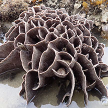

|
|
| hard corals text index | photo index |
| Phylum Cnidaria > Class Anthozoa > Subclass Zoantharia/Hexacorallia > Order Scleractinia > Family Agariciidae |
| Agaricid
corals Family Agariciidae updated Nov 2019 Where seen? These hard corals with intricately patterned surfaces are sometimes seen on our undisturbed Southern shores. Features: These corals have intricate patterns on their surfaces. Colonies may be boulder-shaped (massive) or plate-like (laminar). The polyps are tiny and lack tentacles. They rely on mucus to gather suspended food particles from the water. Leptoseris species (Leafy corals) have colonies with delicate leafy shapes, some species form small thin plates. Unlike the similar-looking Pavona species, Leptoseris corals have polyps appearing on one side of the leaf-like structure while Pavona corals have polyps on both sides. Veron suggests the differences between Leptoseris and Pavona are somewhat arbitrary. What do they eat? All members of Family Agariciidae harbour microscopic, single-celled symbiotic algae (zooxanthellae). The algae undergo photosynthesis to produce food from sunlight. The food produced is shared with the host, which in return provides the algae with shelter and minerals. It is believed this additional source of nutrients from the zooxanthellae help hard corals produce their hard skeletons and thus expand their size faster. Status and threats: Some of our Agaricid corals are listed as threatened on the IUCN global listing. Like other creatures of the intertidal zone, they are affected by human activities such as reclamation and pollution. Trampling by careless visitors, and over-collection by hobbyists also have an impact on local populations. |
 Ringed plate coral. Pulau Semakau, Aug 07 |
 Castle coral. Terumbu Bemban, Jul 07 |
 Lettuce coral. Terumbu Hantu, Jul 18 |
| Some Agaricid corals on Singapore shores |


| Family
Agariciidae recorded for Singapore from Danwei Huang, Karenne P. P. Tun, L. M Chou and Peter A. Todd. 30 Dec 2009. An inventory of zooxanthellate sclerectinian corals in Singapore including 33 new records **the species found on many shores in Danwei's paper. in red are those listed as threatened on the IUCN global list.
|
|
Links
|